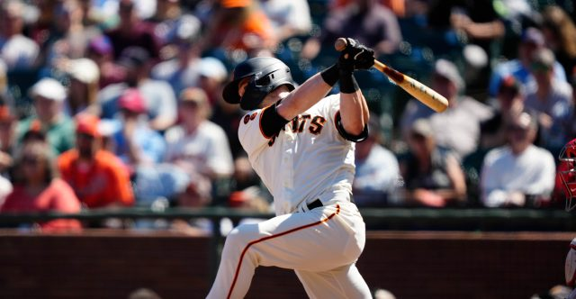
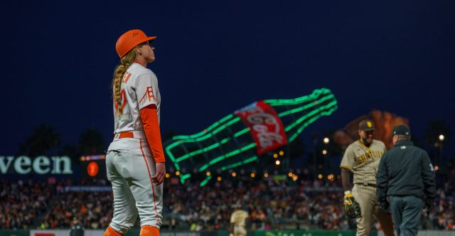
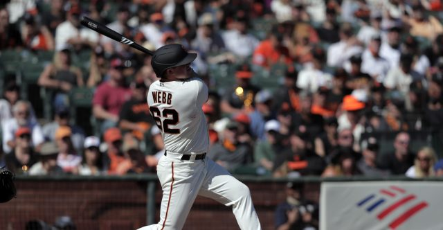
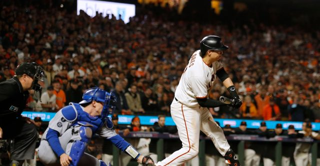

Writing
I was a paid site writer with Vox Media's McCovey Chronicles, covering the San Francisco Giants.

Suzanna Mitchell
Getty Images
What contact and batted-ball data say about a bat that stopped slugging
2023

Neville E. Guard
USA TODAY Sports
The first female on-field coach in MLB history
2022

Carlos Avila Gonzalez
Getty Images
On the designated hitter arriving in the National League
2022

Ross Cameron
USA TODAY Sports
How much umpires helped or hurt the Giants over a 107-win season
2021
Richard Mackson
USA TODAY Sports
A shutout in Los Angeles puts the Giants up 2‑1 in the division series
2021
Darren Yamashita
USA TODAY Sports
Analyzing Kevin Gausman's decline in the second half of the season
2021
Writing on the ideologies, culture, and political stakes of Silicon Valley. More on Coding Utopia, my Substack.
Ballot drop box, San Francisco
Aug 2026
And why this might be the greatest impediment to Silicon Valley's power
Jul 2026
Or why workers should have the right to opt out of AI
Apr 2026
On an alternative world where AI is pro-human
Atomic Bomb Dome, Hiroshima, January 2026
Jan 2026
And how we never learn from our greatest mistakes
Poetry and personal essays — an extension of my minor in Poetry at Stanford.
Work forthcoming.